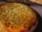
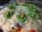

Pizza
Pizza
Pizza é uma preparação culinária que consiste em um disco de massa fermentada
de farinha de trigo, regado com molho de tomates e coberto com ingredients variados que normalmente incluem algum tipo de queijo, carnes preparadas ou defumadas
e ervas, normalmente orégano ou manjericão, tudo assado em forno.
Alguns tipos e sabores
A variedade de coberturas que se pode colocar sobre uma pizza é quase infinita, entretanto, algumas preparações são
tradicionais e têm fiéis seguidores:
 Margherita
Margherita-  Mussarela
-  Portuguesa
 Calabresa
Calabresa Califórnia
Califórnia Pepperoni
Pepperoni Quatro Queijos
Quatro Queijos Bacon
Bacon
Fontes
- https://pt.wikipedia.org/wiki/Pizza
- http://www.pizza.it
- http>//en.wikipedia.org/wiki/History_of_pizza
www.pizzaonline.com.br